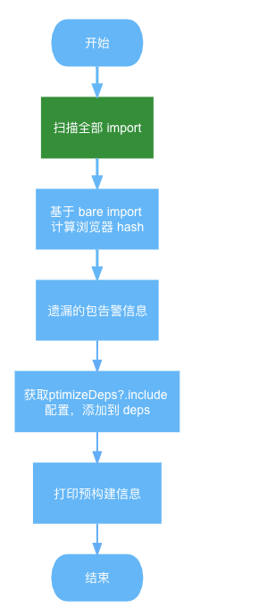

为什么 vite 要在开发环境使用 es build，生产环境用 rollup 双模式打包？
开发环境和生成环境的构建需求是不一样的
开发环境(依赖预构建)
你的代码不打包，依赖模块要打包还要缓存（因为有这两点，所以打包速度快）
esbuild 底层是使用 go 语言（效率高）
生产环境
代码分割，动态导入
tree shaking
插件生态
vite 比 webpack 好在哪里
构建时间短
不需要优化
vite 的依赖预构建是怎么做的
启动服务的时候会运行一个函数开始依赖预构建，依赖预构建会有缓存，保存在一个 metadata.js 中
该函数会在获取到_metadata.json 文件内容之后去对比 lock 文件 hash 以及配置文件 optimizeDeps 内容，如果一样说明预构建缓存没有任何改变，无需重新预构建，直接使用上次预构建缓存即可
如果没有缓存的话是通过扫描项目中的 import 语句来得到需要预编译的依赖
